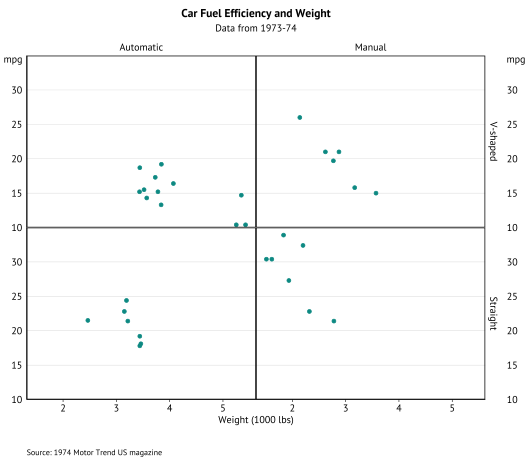
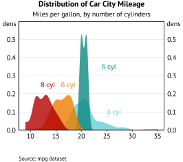
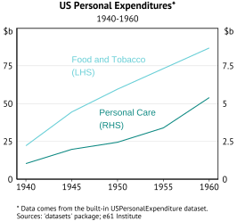
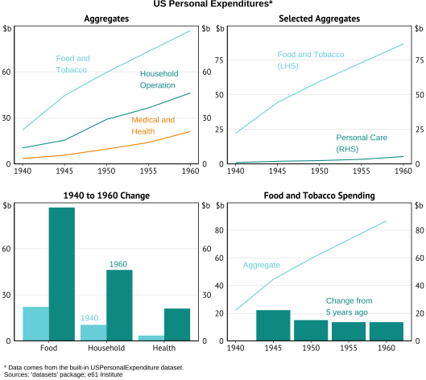

Introduction
theme61 is e61 Institute’s graphing package for
producing graphs that abide by our in-house standards. It works by
changing the appearance and functionality of graphs produced using the
ggplot2 package.
You should read this article to help you understand how to create graphs following our graph standards.
This article provides some examples to help you figure out what elements you can change. The function documentation provides comprehensive information on the full customisability of the package.
Correct workflow
When making graphs, you should follow the below workflow.
Save your graph using save_e61(). Do
not use the Export button in the Plots tab or
ggsave().
Start by creating a graph using the ‘normal’ stuff:
ggplot(data, aes(x, y)) + geom_blah(). Then:
- Add plot labelling:
plot_label() - Add titles, axes labels, footnotes and sources:
labs_e61(title = "Title", subtitle = "Subtitle", footnotes = "Footnotes", sources = c("Source 1", "Source 2"), y = "%") - (optional) Use
theme_e61()if you want to add a legend, or change its position. Other aspects oftheme_e61()are now added by default. - (optional) Format the x and y axes scales:
scale_y_continuous_e61(),scale_x_continuous_e61(). Your y-axis will be automatically scaled when you save your chart usingsave_e61()but if you do not like the automatic scaling then you can always scale your axes manually. - Save the graph:
save_e61().
The colour palette
This is the e61 Institute colour palette.
All the colours are package objects that can be selected by using the
appropriate name. For example, e61_tealdark3 selects the
colour ‘Teal dark’ with the shade in column ‘3’.
Graph examples
Line graph
g <- ggplot(data_3, aes(x = year, y = value, colour = category)) +
geom_line() +
plot_label(c("Food and\nTobacco", "Household\nOperation", "Medical and\nHealth"),
c(1944, 1954, 1953),
c(65, 55, 25)) +
labs_e61(
title = "US Personal Expenditures*",
subtitle = "1940-1960",
footnotes = "Data comes from the built-in USPersonalExpenditure dataset.",
sources = c("e61 Institute", "'datasets' package"),
y = "$b"
)
save_e61("../man/figures/g-line.svg")Column graph
g <- ggplot(data_3, aes(x = year, y = value, fill = category)) +
geom_col(position = "dodge") +
plot_label(c("Food and\nTobacco", "Household\nOperation", "Medical and\nHealth"),
c(1936, 1943, 1950),
c(80, 80, 80)) +
labs_e61(
title = "US Personal Expenditures*",
subtitle = "1940-1960",
footnotes = "Data comes from the built-in USPersonalExpenditure dataset.",
sources = c("e61 Institute", "'datasets' package"),
y = "$b"
)
save_e61("../man/figures/g-col.svg")Scatter graph
# Set up data
mtcars2 <- within(mtcars, {
vs <- factor(vs, labels = c("V-shaped", "Straight"))
am <- factor(am, labels = c("Automatic", "Manual"))
cyl <- factor(cyl)
gear <- factor(gear)
})
# Graph
g <- ggplot(mtcars2, aes(x = wt, y = mpg, colour = gear)) +
geom_point() +
plot_label(
label = c("3 cyl", "4 cyl", "5 cyl"),
x = c(4, 2.7, 2.5),
y = c(23, 35, 15)
) +
labs_e61(
title = "Car Fuel Efficiency and Weight",
subtitle = "Data from 1973-74",
sources = "1974 Motor Trend US magazine",
x = "Weight (1000 lbs)",
y = "mpg"
)
save_e61("../man/figures/g-scatter.svg")Faceted scatter graph
g <- ggplot(mtcars2, aes(x = wt, y = mpg)) +
facet_grid(vs ~ am) +
geom_point() +
labs_e61(
title = "Car Fuel Efficiency and Weight",
subtitle = "Data from 1973-74",
sources = "1974 Motor Trend US magazine",
x = "Weight (1000 lbs)",
y = "mpg"
)
save_e61("../man/figures/g-facet.svg")
Density graph
g <- ggplot(mpg, aes(x = cty, fill = factor(cyl))) +
geom_density(linetype = "blank", alpha = 0.8) +
labs_e61(
title = "Distribution of Car City Mileage",
subtitle = "Miles per gallon, by number of cylinders",
sources = "mpg dataset",
y = "dens",
) +
plot_label(label = c("3 cyl", "5 cyl", "6 cyl", "8 cyl"),
x = c(25, 24, 16, 12),
y = c(0.1, 0.35, 0.25, 0.25)) +
scale_y_continuous_e61()
save_e61("../man/figures/g-dens.svg")
Horizontal bar graph
g <- ggplot(data_col, aes(x = category, y = value, fill = factor(year))) +
geom_col(position = "dodge") +
coord_flip() +
plot_label(c("1940", "1960"),
c(1.8, 2.2),
c(15, 50)) +
labs_e61(
title = "1940 to 1960 Change",
y = "$b"
) +
format_flip()
save_e61("../man/figures/g-flip.svg")
Rescaled secondary axis graph
Note: Admittedly this feature is somewhat advanced/fiddly.
Despite Hadley’s
best efforts to make it difficult to add a differently-scaled second
y-axis, this feature now exists in theme61.
Implementing dual y-axis requires a fair amount of additional faff that I will try and step through.
First, the structure of your data needs to be different to the usual
best practice. Normally, you want your data in long format, and add
separate groups using colour or fill. However,
if you want one of the lines on the secondary axis, each series needs to
be in its own column.
Each series will also be plotted separately with its own
geom_line() (or any other geom_ depending on
what you want to plot obviously), as in the example below.
You need to then transform the y aesthetic in the series
to be plotted on the secondary axis using the
sec_rescale_inv() function (see the documentation for the
required arguments).
You also need to manually specify the colour to colour in the lines,
using palette_e61().
You must then specify the sec_axis argument in
scale_y_continuous_e61() with
sec_axis(~sec_rescale(.), name = "name"). Replace “name”
with the y-axis label. This must be specified otherwise it will show up
blank.
You also need to set rescale_sec = TRUE to ensure the
formatting is appropriately adjusted for the secondary axis.
Finally, you will need to run your code twice, as the first time, there will be an error caused by how R internally assigns objects generated by simultaneous function calls (this may get fixed in the future).
g <- ggplot(data_dual, aes(x = year)) +
geom_line(aes(y = `Food and Tobacco`), colour = palette_e61(2)[[1]]) +
# All the action is in the next 5 lines
geom_line(aes(y = sec_rescale_inv(`Personal Care`, scale = 0.1, shift = 0)),
colour = palette_e61(2)[[2]]) +
scale_y_continuous_e61(limits = c(0, 100, 25), name = "$b",
# Usually you don't need to supply scale and shift again but to get the vignette to run you do here
sec_axis = sec_axis(~sec_rescale(., scale = 0.1, shift = 0), name = "$b"),
rescale_sec = TRUE) +
plot_label(c("Food and Tobacco\n(LHS)", "Personal Care\n(RHS)"),
c(1945, 1948),
c(75, 40)) +
labs_e61(
title = "US Personal Expenditures*",
subtitle = "1940-1960",
footnotes = "Data comes from the built-in USPersonalExpenditure dataset.",
sources = c("e61 Institute", "'datasets' package"),
y = "$b"
)
Point range graph
geom_pointrange() is useful for plotting regression
coefficients. If you are plotting coefficients over time, e.g. for an
event study, including a geom_line() can also help show the
passage of time.
g <- ggplot(pt_rg_data, aes(x, y, ymin = ymin, ymax = ymax)) +
geom_vline(xintercept = 0, linetype = 2, linewidth = 0.25) +
add_baseline() +
geom_pointrange(colour = e61_tealdark) +
geom_line(colour = e61_tealdark) +
labs_e61(
title = "Regression Coefficients",
sources = c("e61 Institute"),
y = "%"
)
save_e61("../man/figures/g-ptrg.svg")Multi-panel graph
We have discovered in our research notes that putting multiple graphs together in a grid/panel works quite well with the format.
Note that graph titles need to be done differently in multi-panels. Individual panels should not have sources or footnotes, they should be in the footer of the full multi-panel instead.
First we make the sub-plots as their own graph.
g1 <-
ggplot(data_3, aes(x = year, y = value, colour = category)) +
geom_line() +
plot_label(c("Food and\nTobacco", "Household\nOperation", "Medical and\nHealth"),
c(1944, 1954, 1953),
c(65, 55, 25)) +
labs_e61(
title = "Aggregates",
y = "$b"
)
g2 <- ggplot(data_dual, aes(x = year)) +
geom_line(aes(y = `Food and Tobacco`), colour = palette_e61(2)[[1]]) +
geom_line(aes(y = `Personal Care`), colour = palette_e61(2)[[2]]) +
scale_y_continuous_e61(limits = c(0, 100, 25)) +
plot_label(
c("Food and Tobacco\n(LHS)", "Personal Care\n(RHS)"),
c(1945, 1952),
c(75, 15)
) +
labs_e61(
title = "Selected Aggregates",
y = "$b"
)
g3 <-
ggplot(data_col, aes(x = category, y = value, fill = factor(year))) +
geom_col(position = "dodge") +
plot_label(c("1940", "1960"),
c(1.55, 2.05),
c(15, 50)) +
labs_e61(
title = "1940 to 1960 Change",
y = "$b"
)
g4 <-
ggplot(data_chg[category == "Food and Tobacco"], aes(x = year)) +
geom_line(aes(y = value), colour = palette_e61(2)[[1]]) +
geom_col(aes(y = change), fill = palette_e61(2)[[2]]) +
scale_y_continuous_e61(limits = c(0, 100, 20)) +
plot_label(
c("Aggregate", "Change from\n5 years ago"),
c(1941, 1952),
c(55, 25)
) +
labs_e61(
title = "Food and Tobacco Spending",
y = "$b"
)Then we use save_e61() to put the graphs together.
save_e61(
g1, g2, g3, g4,
filename = "../man/figures/g-multi.svg",
title = "US Personal Expenditures*",
footnotes = "Data comes from the built-in USPersonalExpenditure dataset.",
sources = c("e61 Institute", "'datasets' package")
)